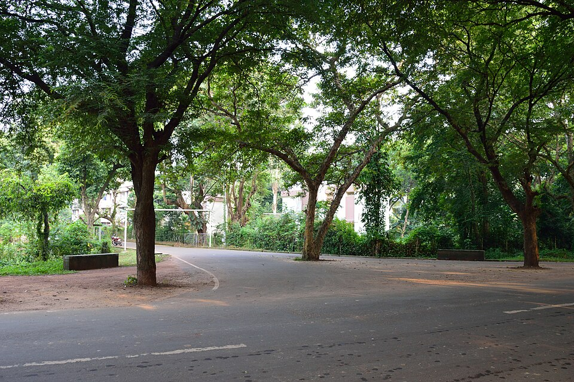

पुतिन, ट्रंप और जिनपिंग की शेनझेन बैठक को रूस ने बताया ऐतिहासिक
रूस ने पुतिन, ट्रंप और जिनपिंग की त्रिपक्षीय बैठक को वैश्विक राजनीति में बदलाव का संकेत बताया है। हालांकि, इस बीच यूक्रेन पर रूसी हमले जारी हैं और शांति दावों पर सवाल उठ रहे हैं।
ताज़ा ख़बरें
 राष्ट्रीय
राष्ट्रीयवाराणसी के नमो घाट पर 'भजन क्लबिंग' का आयोजन, पीएम मोदी ने की युवाओं के उत्साह की सराहना
वाराणसी के नमो घाट पर चार दिवसीय गंगा महोत्सव के दौरान 'भजन क्लबिंग' का आयोजन किया गया। आधुनिक बीट्स पर पारंपरिक भजनों के इस कार्यक्रम में युवाओं ने भारी उत्साह दिखाया, जिसकी प्रधानमंत्री नरेंद्र मोदी ने सराहना की है।
अंतरराष्ट्रीयगुरपतवंत सिंह पन्नू हत्या साजिश मामला: निखिल गुप्ता को अमेरिका में 19 साल से अधिक की सजा
अमेरिकी अदालत ने खालिस्तानी अलगाववादी गुरपतवंत सिंह पन्नू की हत्या की साजिश से जुड़े मामले में भारतीय नागरिक निखिल गुप्ता को करीब 19 साल 7 महीने की सजा सुनाई है।
अंतरराष्ट्रीयपोलैंड के हवाई क्षेत्र में गिरी रूसी मिसाइल, सैन्य अभ्यास के दौरान हुई घटना
पोलैंड में एक रूसी मिसाइल गिरने की घटना सामने आई है। प्रधानमंत्री डोनाल्ड टस्क के अनुसार, यह घटना तब हुई जब पश्चिमी देशों की सेनाएं इलाके में सैन्य अभ्यास कर रही थीं।
राष्ट्रीयपूर्वी दिल्ली के मधु विहार में शादी का प्रस्ताव देने पहुंचे युवक की हत्या
पूर्वी दिल्ली के मधु विहार इलाके में एक सोशल मीडिया इंफ्लुएंसर को शादी का प्रस्ताव देने गए युवक की बेरहमी से पिटाई के बाद मौत हो गई। पुलिस ने लड़की के पिता समेत कई आरोपियों को गिरफ्तार किया है।
अंतरराष्ट्रीयपेरू में 6.8 तीव्रता का तेज़ भूकंप, लीमा में घरों से बाहर निकले लोग
मध्य पेरू में 6.8 तीव्रता का भूकंप आने से राजधानी लीमा में दहशत फैल गई और लोग सड़कों पर आ गए। संसद भवन को भी एहतियातन खाली कराया गया।
 अंतरराष्ट्रीय
अंतरराष्ट्रीयसिंधु जल संधि पर भारत का रुख स्पष्ट, विदेश मंत्रालय ने कहा- कोई बदलाव नहीं
भारत ने स्पष्ट किया है कि सिंधु जल संधि को लेकर उसका रुख पूरी तरह साफ है और इसमें कोई बदलाव नहीं आया है। यह बयान पाकिस्तानी मंत्री मुसादिक मलिक के दिल्ली दौरे के बीच आया है।
 राष्ट्रीय
राष्ट्रीयसांसद अमृतपाल सिंह दादी के अंतिम संस्कार में शामिल होने असम से दिल्ली लाए गए
असम की डिब्रूगढ़ जेल में बंद सांसद अमृतपाल सिंह को दादी के अंतिम संस्कार में शामिल होने के लिए दिल्ली लाया गया है। पंजाब पुलिस उन्हें कड़ी सुरक्षा के बीच पंजाब लेकर जा रही है।
 राष्ट्रीय
राष्ट्रीयप्रधानमंत्री नरेंद्र मोदी आज जाएंगे IIT खड़गपुर, प्लेटिनम जुबली समारोह में लेंगे हिस्सा
प्रधानमंत्री नरेंद्र मोदी शनिवार को पश्चिम बंगाल के IIT खड़गपुर के प्लेटिनम जुबली समारोह में शामिल होंगे। इस दौरान वह 75 छात्रों से संवाद करेंगे और एक विशेष सिक्का भी जारी करेंगे।

राष्ट्रीयप्रधानमंत्री नरेंद्र मोदी आज जाएंगे IIT खड़गपुर, प्लेटिनम जुबली समारोह में लेंगे हिस्सा
प्रधानमंत्री नरेंद्र मोदी शनिवार को पश्चिम बंगाल के IIT खड़गपुर के प्लेटिनम जुबली समारोह में शामिल होंगे। इस दौरान वह 75 छात्रों से संवाद करेंगे और एक विशेष सिक्का भी जारी करेंगे।
राष्ट्रीययूपी के मुख्यमंत्री योगी आदित्यनाथ की मां सावित्री देवी का निधन
उत्तर प्रदेश के मुख्यमंत्री योगी आदित्यनाथ की मां सावित्री देवी का निधन हो गया है। उनके निधन के बाद गांव पंचूर में संन्यास लेने के बाद योगी के पहली बार घर लौटने और मां द्वारा भिक्षा दिए जाने के भावुक पल को लोग याद कर रहे हैं।
राष्ट्रीयअसम से एयरलिफ्ट कर जामनगर के वंतारा पहुंचाया गया घायल हाथी का बच्चा
असम में जन्म के समय चोटिल हुए सात हफ्ते के हाथी के बच्चे ‘राजा’ को बेहतर इलाज के लिए अनंत अंबानी की पहल पर जामनगर के वंतारा केंद्र एयरलिफ्ट किया गया है।
राष्ट्रीयमुंबई में नेवल डॉकयार्ड की संवेदनशील तस्वीरें लीक करने के आरोप में अप्रेंटिस गिरफ्तार
मुंबई पुलिस ने नौसेना के ठिकानों की संवेदनशील तस्वीरें सोशल मीडिया पर शेयर करने के आरोप में नेवल डॉकयार्ड के 21 वर्षीय अप्रेंटिस को गिरफ्तार किया है। अधिकारियों को इसके पाकिस्तान से जुड़े होने का संदेह है।
 खेल
खेलभारत-न्यूजीलैंड पहला टेस्ट: दूसरे दिन भारत का स्कोर एक विकेट पर 159 रन
न्यूजीलैंड के 368 रन के जवाब में भारत ने पहले टेस्ट के दूसरे दिन का खेल समाप्त होने तक एक विकेट पर 159 रन बना लिए हैं। केएल राहुल और देवदत्त पडिक्कल क्रीज पर हैं।
राष्ट्रीयप्रधानमंत्री नरेंद्र मोदी शनिवार को लखनऊ में 5वें कौशल दीक्षांत समारोह में होंगे शामिल
प्रधानमंत्री नरेंद्र मोदी शनिवार को लखनऊ पहुंचेंगे और इंदिरा गांधी प्रतिष्ठान में आयोजित 5वें कौशल दीक्षांत समारोह में हिस्सा लेंगे। इसे लेकर सुरक्षा के कड़े इंतजाम किए गए हैं।
राष्ट्रीयमैरी कॉम के खिलाफ मानहानि मामला, दिल्ली कोर्ट ने जारी किया नोटिस
दिल्ली की एक अदालत ने ओलंपिक पदक विजेता बॉक्सर मैरी कॉम के खिलाफ उनके पूर्व पति द्वारा दायर आपराधिक मानहानि मामले में नोटिस जारी किया है।
 खेल
खेलभारत-न्यूजीलैंड वेलिंगटन टेस्ट: तीसरे दिन भारत मजबूत स्थिति में
वेलिंगटन टेस्ट के तीसरे दिन भारत ने अपनी पहली पारी में मजबूत शुरुआत की है। केएल राहुल शतक के करीब हैं और देवदत्त पडिक्कल अर्धशतक बनाकर क्रीज पर टिके हुए हैं।
 राष्ट्रीय
राष्ट्रीयअमरनाथ यात्रा मार्ग का 85 प्रतिशत हिस्सा भूस्खलन के प्रति संवेदनशील, शोध में खुलासा
नेशनल इंस्टिट्यूट ऑफ़ हाइड्रोलॉजी के अध्ययन के मुताबिक अमरनाथ यात्रा का 85 प्रतिशत मार्ग भूस्खलन के लिहाज से संवेदनशील है। शोधकर्ताओं ने बड़े हादसों से बचने के लिए सुरक्षा पुख्ता करने की सिफारिश की है।
राष्ट्रीयमणिपुर के चंदेल जिले में जहरीली शराब पीने से 15 लोगों की मौत, 600 से अधिक अस्पताल में भर्ती
मणिपुर के चंदेल जिले में जहरीली शराब पीने से 15 लोगों की मौत हो गई है, जबकि 600 से अधिक लोगों को अस्पतालों में भर्ती कराया गया है। पुलिस मामले की जांच कर रही है।
 राष्ट्रीय
राष्ट्रीयउत्तर प्रदेश शिक्षा सेवा चयन आयोग ने स्पेशल TET का रिजल्ट किया घोषित
उत्तर प्रदेश शिक्षा सेवा चयन आयोग ने विशेष शिक्षक पात्रता परीक्षा (स्पेशल टीईटी) का परिणाम जारी कर दिया है, जिसमें प्राथमिक स्तर पर 15,159 और उच्च प्राथमिक स्तर पर 23,743 अभ्यर्थी सफल हुए हैं।
खेलएशियन गेम्स की मेडलिस्ट शॉट पुट खिलाड़ी किरण बालियान पर डोपिंग के चलते 8 साल का प्रतिबंध
एशियन गेम्स 2022 की ब्रॉन्ज मेडलिस्ट भारतीय शॉट पुट खिलाड़ी किरण बालियान को डोपिंग नियमों के उल्लंघन और सैंपल से छेड़छाड़ का दोषी पाए जाने पर 8 साल के लिए प्रतिबंधित कर दिया गया है।
 राष्ट्रीय
राष्ट्रीयप्रधानमंत्री नरेंद्र मोदी आज तीन राज्यों के दौरे पर, बंगाल, बिहार और यूपी को मिलेगी सौगात
प्रधानमंत्री नरेंद्र मोदी शनिवार को पश्चिम बंगाल, बिहार और उत्तर प्रदेश का दौरा करेंगे। इस दौरान वह आईआईटी खड़गपुर के समारोह में शामिल होने के साथ ही बिहार में हजारों करोड़ की विकास परियोजनाओं की आधारशिला रखेंगे और लखनऊ में दीक्षांत समारोह में हिस्सा लेंगे।
 राष्ट्रीय
राष्ट्रीयराजस्थान पंचायत चुनाव: कांग्रेस ने भाजपा को पछाड़कर दर्ज की बड़ी जीत
राजस्थान पंचायत चुनाव में कांग्रेस ने सत्तारूढ़ भाजपा को पीछे छोड़ते हुए पंचायत समिति और जिला परिषद सीटों पर स्पष्ट बढ़त हासिल की है। राज्य निर्वाचन आयोग ने यह आंकड़े जारी किए हैं।
 राष्ट्रीय
राष्ट्रीयकर्नाटक में बाइक टैक्सी सेवाओं को सुप्रीम कोर्ट से राहत, सरकार की याचिका खारिज
सुप्रीम कोर्ट ने कर्नाटक में बाइक टैक्सी सेवाओं को मंजूरी देने वाले हाईकोर्ट के फैसले को बरकरार रखा है। कोर्ट ने राज्य सरकार की विशेष अनुमति याचिका खारिज करते हुए कहा कि मोटरसाइकिलें भी परिवहन वाहन हो सकती हैं।
 राष्ट्रीय
राष्ट्रीयभोपाल में 12 दिसंबर को INDIA ब्लॉक की रैली, राहुल और अखिलेश होंगे शामिल
भोपाल में 12 दिसंबर को INDIA ब्लॉक की एक विशाल रैली आयोजित की जाएगी। इस कार्यक्रम में कांग्रेस नेता राहुल गांधी, प्रियंका गांधी वाड्रा और सपा प्रमुख अखिलेश यादव एक ही मंच पर नजर आएंगे।
अंतरराष्ट्रीयबांग्लादेश में मजदूरों के प्रदर्शन के दौरान हिंसक झड़पें, दो की मौत
बांग्लादेश में पिछले 20 दिन से चल रहे मजदूरों के प्रदर्शन के दौरान हुई हिंसा में दो श्रमिकों की मौत हो गई, जबकि 543 लोग घायल हुए हैं। मानवाधिकार संगठन ने निष्पक्ष जांच की मांग की है।
 अंतरराष्ट्रीय
अंतरराष्ट्रीयडोनाल्ड ट्रंप ने भारत की 7% जीडीपी वृद्धि और कम ब्याज दरों की सराहना की
अमेरिकी राष्ट्रपति डोनाल्ड ट्रंप ने भारत की आर्थिक प्रगति की तारीफ करते हुए कहा कि कम ब्याज दरों और 7% जीडीपी वृद्धि जैसे रुख से अमेरिका भी 20% तक विकास दर हासिल कर सकता है।
राष्ट्रीयराजस्थान पंचायत चुनाव नतीजों पर बोले राहुल गांधी, देश के हर गांव की आवाज
राजस्थान पंचायत चुनाव में कांग्रेस पार्टी की जीत पर राहुल गांधी ने प्रतिक्रिया दी है। उन्होंने कहा कि यह जनादेश देश के हर गांव की आवाज को दर्शाता है।
राष्ट्रीयबस्ती में इलेक्ट्रॉनिक्स कारोबारी का अपहरण, चलती कार से कूदकर बचाई जान
उत्तर प्रदेश के बस्ती जिले में बदमाशों ने असलहे के बल पर एक इलेक्ट्रॉनिक्स कारोबारी का अपहरण कर लिया। चार घंटे तक प्रताड़ित करने के बाद कारोबारी ने चलती कार से कूदकर अपनी जान बचाई।
राष्ट्रीयमिशन 2027: यूपी की सभी 403 सीटों पर महिला विस्तारक उतारेगी बीजेपी
उत्तर प्रदेश विधानसभा चुनाव 2027 को लेकर बीजेपी ने महिला वोट बैंक पर फोकस बढ़ाया है। आठ राज्यों से बुलाई गई 403 महिला विस्तारक प्रदेश की सभी सीटों पर घर-घर जाकर संवाद करेंगी।
राष्ट्रीयहैदराबाद में मेटा ऑफिस के बाहर यूथ कांग्रेस का प्रदर्शन
हैदराबाद में यूथ कांग्रेस कार्यकर्ताओं ने मेटा कार्यालय के बाहर प्रदर्शन कर नेताओं के इंस्टाग्राम अकाउंट सस्पेंड किए जाने का विरोध किया।
राष्ट्रीयहैदराबाद में मेटा कार्यालय पर यूथ कांग्रेस का प्रदर्शन, अकाउंट सस्पेंड होने से था आक्रोश
कांग्रेस नेताओं के सोशल मीडिया अकाउंट सस्पेंड होने के विरोध में यूथ कांग्रेस के कार्यकर्ताओं ने हैदराबाद में मेटा कार्यालय के बाहर प्रदर्शन किया और अंदर घुसने का प्रयास किया।
खेलएशिया कप: रविवार को भारत और पाकिस्तान की 'ए' टीमों के बीच मुकाबला
एशिया कप राइजिंग स्टार्स 2026 में रविवार को भारत-ए और पाकिस्तान-ए की टीमें आमने-सामने होंगी। तिलक वर्मा की कप्तानी वाली भारतीय टीम में कई स्टार खिलाड़ी शामिल हैं।
अंतरराष्ट्रीयपॉप सिंगर टेलर स्विफ्ट को दादा साहब फाल्के इंटरनेशनल फिल्म फेस्टिवल अवार्ड
पॉप गायिका टेलर स्विफ्ट को वर्ष 2026 के दादा साहब फाल्के इंटरनेशनल फिल्म फेस्टिवल अवार्ड्स में इंटरनेशनल आर्टिस्ट ऑफ द ईयर के रूप में चुना गया है।
अंतरराष्ट्रीयसिंधु जल संधि पर भारत का रुख स्पष्ट, विदेश मंत्रालय ने कहा- कोई बदलाव नहीं
पाकिस्तान के मंत्री मुसादिक मसूद मलिक के नई दिल्ली दौरे के बीच विदेश मंत्रालय ने स्पष्ट किया है कि 1960 की सिंधु जल संधि पर भारत के रुख में कोई बदलाव नहीं आया है।
अंतरराष्ट्रीयअमृतसर के निखिल गुप्ता को अमेरिकी अदालत ने सुनाई 19 साल से अधिक की सजा
अमेरिका में सिख अलगाववादी गुरपतवंत सिंह पन्नू की हत्या की साजिश रचने के मामले में भारतीय नागरिक निखिल गुप्ता को अमेरिकी संघीय अदालत ने 235 महीने यानी 19 साल से अधिक की सजा सुनाई है।
 राष्ट्रीय
राष्ट्रीयपहलगाम आतंकी हमला: गोप्रो कैमरे की सप्लाई चेन पर चीन से जवाब का इंतजार
पहलगाम हमले में बरामद गोप्रो कैमरे की सप्लाई चेन को लेकर एनआईए ने चीन से जानकारी मांगी है, लेकिन अब तक कोई जवाब नहीं मिला है। जांच एजेंसी यह पता लगा रही है कि कैमरा चीनी डिस्ट्रीब्यूटर से लश्कर तक कैसे पहुंचा।
राष्ट्रीयपहलगाम हमला: आतंकवादियों से मिले कैमरे पर चीन ने भारत को नहीं दिया जवाब
राष्ट्रीय जांच एजेंसी (NIA) के प्रमुख राकेश अग्रवाल ने बताया कि पिछले साल हुए पहलगाम हमले में मारे गए आतंकवादियों से मिले अमेरिकी गोप्रो कैमरे को लेकर चीन ने अभी तक भारत के सवालों का कोई जवाब नहीं दिया है।
अंतरराष्ट्रीयभारत ने एनएसए अजीत डोभाल और पूर्व रॉ प्रमुख को अमेरिकी अदालत के समन को किया खारिज
विदेश मंत्रालय ने एनएसए अजीत डोभाल और पूर्व रॉ प्रमुख सामंत गोयल को खालिस्तान समर्थक संगठन की याचिका पर अमेरिकी अदालत द्वारा जारी समन को पूरी तरह खारिज कर दिया है।
व्यापारटाटा समूह की एयर इंडिया को हुआ ₹22,000 करोड़ से अधिक का घाटा
वित्त वर्ष 2025-26 में एयर इंडिया को भारी वित्तीय घाटा हुआ है। ईंधन की बढ़ती कीमतों और पाकिस्तानी एयरस्पेस पर पाबंदियों के कारण परिचालन लागत में बढ़ोतरी इसकी मुख्य वजहें बताई गई हैं।